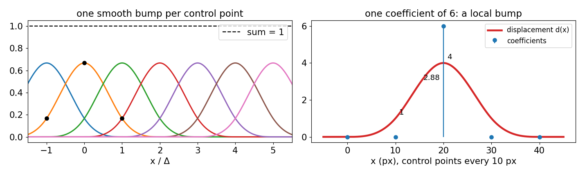
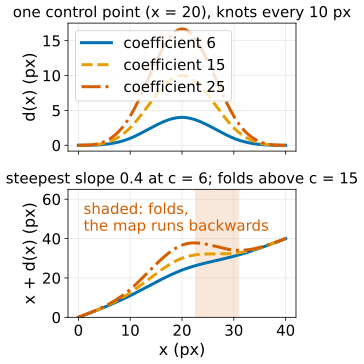
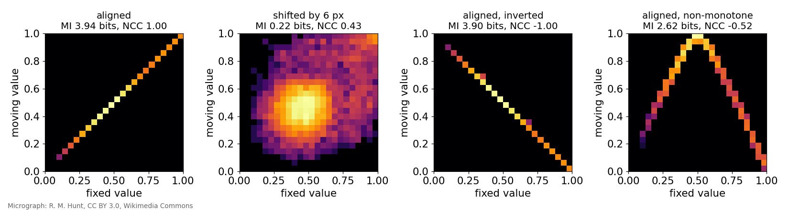
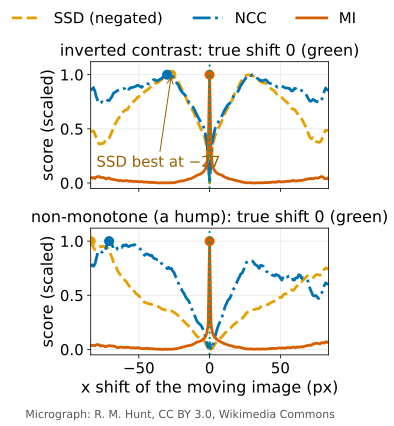
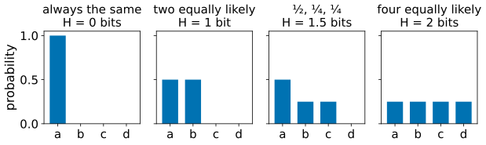
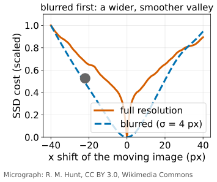

Non-rigid registration: deformation fields, B-spline FFD and mutual information
Image analysis
About this lecture
Optical flow assumed small motion between two nearly identical frames. Registration aligns images that may differ a lot: hours apart, two animals, a live and a fixed sample, two stains.
A deformation field: a vector per pixel, like a flow, but from a smooth family of deformations.
The B-spline free-form deformation: a coarse grid of control points.
Keeping it physical: no folding (the Jacobian determinant), a bending penalty.
Similarity measures: SSD, NCC, and mutual information for images with different contrast.
Optimisation by gradient descent, coarse to fine; applications and honest limits.
Slides titled The math give the formulas and proofs; the ideas are complete without them.
Convention: the fixed image stays put; the moving image is sampled at \mathbf x + \mathbf d(\mathbf x) to bring it onto the fixed one.
A smooth family: free-form deformation

Put a coarse grid of control points over the image (every 8 to 32 pixels). Each carries a displacement vector. The displacement of every pixel is a smooth blend of the control points nearby.
Each control point acts through a smooth bump (the cubic B-spline), 4 grid spacings wide.
Moving one control point changes only a local patch; all moved equally = a translation.
Grid spacing = how local the deformation can be. B-splines and the FFD in depth: the splines day (free-form deformation, B-splines). Landmark-based alternative (matching chosen points): thin-plate splines, and Procrustes for the rigid part.
At the knots: \beta^3(0) = \tfrac46, \beta^3(\pm1) = \tfrac16; and \sum_k \beta^3(t - k) = 1 for every t (partition of unity: equal coefficients give a translation).
1D example (knots every 10 px, coefficients 0, 0, 6, 0, 0): d = 4 at the moved knot, 1 at its neighbours, 6\,\beta^3(0.5) = 2.875 half way.
\mathbf d is linear in the coefficients, so the gradient of any cost with respect to \mathbf c_{kl} is a B-spline-weighted sum of per-pixel gradients.
Keeping it physical: no folding
The map \mathbf x \mapsto \mathbf x + \mathbf d(\mathbf x) must not turn space inside out. Its local area change is the Jacobian determinant:
> 1: the region is larger in the moving image (growth, expansion),
< 1: smaller (compression),
\le 0: folding: two places map onto one, physically impossible.
In 1D: the map x + d(x) folds where d drops faster than 1 pixel per pixel. In the example above the steepest slope is 0.4: safe; the coefficient 6 could grow to 15 before folding.
Regularise: add λ · bending energy (how strongly the field curves) to the cost, as in the regularisation unit. Pointers: diffeomorphic methods guarantee no folding by composing many small steps; the “demons” algorithm smooths a flow-like force each iteration, much like Horn–Schunck.

What does “aligned” mean? The joint histogram

For every pixel, plot (value in fixed, value in moving): the colocalisation scatter plot, now used to align rather than to measure overlap. Aligned images give a tight pattern; misaligned ones a cloud.
Three similarity measures
SSD (sum of squared differences): the pattern should be the diagonal: same contrast, e.g. two frames of a time-lapse.
NCC (normalised cross-correlation, from template matching): the pattern should be a straight line: any gain and offset. An inverted copy gives NCC = −1: perfectly related, yet a cost that wants +1 pushes away from it.
Mutual information (MI): the pattern should be any tight pattern: inverted contrast, two stains, two modalities, even a non-monotone relation. MI measures how much knowing one image’s value tells you about the other’s.

Entropy in one slide
How many yes/no questions do you need, on average, to guess a pixel’s value?
A value that is always the same: 0 questions. Two equally likely values: 1 bit. Four: 2 bits. Probabilities \tfrac12, \tfrac14, \tfrac14: 1.5 bits.
EntropyH = that average number of questions; the sharper the histogram, the lower H (compression day, if taken).
Mutual information = questions saved about the moving value once you know the fixed value: \mathrm{MI} = H(\text{fixed}) + H(\text{moving}) - H(\text{fixed, moving}). A tight joint histogram has a small joint entropy: high MI.

The math: mutual information
From the joint histogram, normalised to probabilities p(a, b), with marginals p(a), p(b): H(A) = -\sum_a p(a)\log_2 p(a),\qquad H(A, B) = -\sum_{a,b} p(a, b)\log_2 p(a, b),\mathrm{MI} = H(A) + H(B) - H(A, B) = \sum_{a,b} p(a, b)\,\log_2\frac{p(a, b)}{p(a)\,p(b)} \;\ge 0 .
MI = 0 iff the two are independent; \mathrm{MI} \le \min(H(A), H(B)), with equality when one image determines the other.
Example (8 pixels): A = (0,0,0,0,1,1,1,1), B = 1 - A: H(A) = H(B) = H(A, B) = 1 bit, MI = 1 bit (NCC = −1). Counts \begin{pmatrix}2&2\\2&2\end{pmatrix}: H(A, B) = 2, MI = 0.
To make MI differentiable in the deformation, spread each value over two neighbouring bins (linear binning).
Pitfalls: too many bins for the number of pixels (MI becomes noisy); a small overlap can give a spuriously high MI (normalised MI as a pointer); local optima.
Try it: joint histogram and similarity
Optimisation: walk downhill
Registration = find the control-point coefficients that minimise cost = dissimilarity + λ · bending.
Gradient descent: picture a ball on the cost landscape; compute which way is downhill for all coefficients at once (the gradient), take a step, repeat. (Backpropagation uses the same idea for networks.)
Coarse to fine in both the image (blurred first) and the grid (start coarse, then halve the spacing).
Local optima and capture range: gradient descent finds the nearest valley; start from a good rigid alignment.

Try it: free-form registration
Applications and honest limits
Aligning the frames of an embryo time-lapse while the tissue deforms; correcting breathing and heartbeat motion in intravital imaging.
Registering live imaging to fixed immunostaining of the same sample; serial sections into a 3D volume; brains to an atlas.
Limits:
A deformation that is too free explains away real biology: a growing structure is “registered away”. Check the Jacobian map, and keep the deformation as smooth as the question allows.
Check with held-out landmarks: points you did not use, whose distance after registration you measure.
Similarity is not correctness: MI can be high for the wrong alignment (small overlaps, repeated texture).
Summary
Non-rigid registration finds a smooth deformation field that makes the moving image look like the fixed one.
B-spline free-form deformation: control points every Δ pixels, each a smooth local bump; equal coefficients = translation.
Keep it physical: Jacobian determinant > 0 (no folding), λ · bending energy.
Similarity: SSD (same contrast), NCC (gain and offset), mutual information (any consistent relation, e.g. two stains).
Gradient descent, coarse to fine, from a good rigid start; check the Jacobian and held-out landmarks.